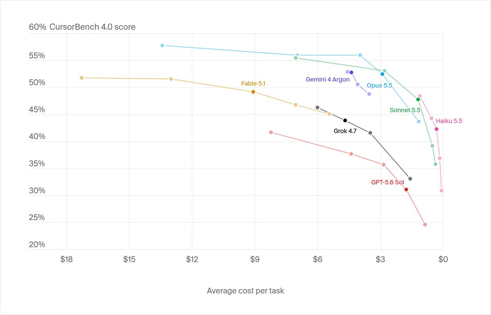
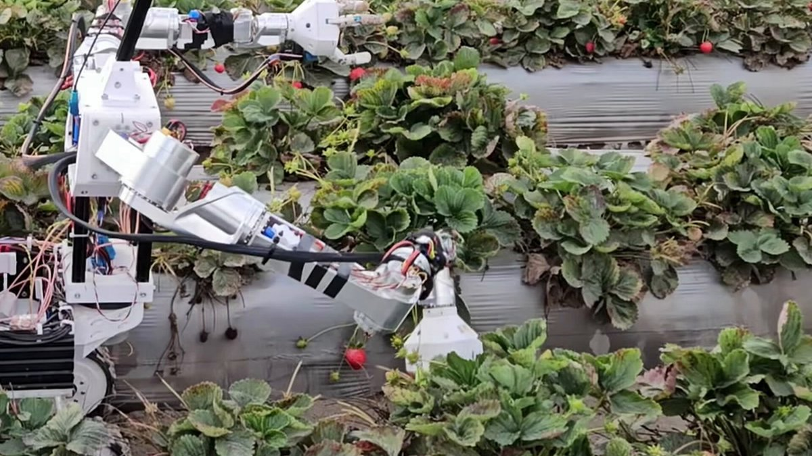
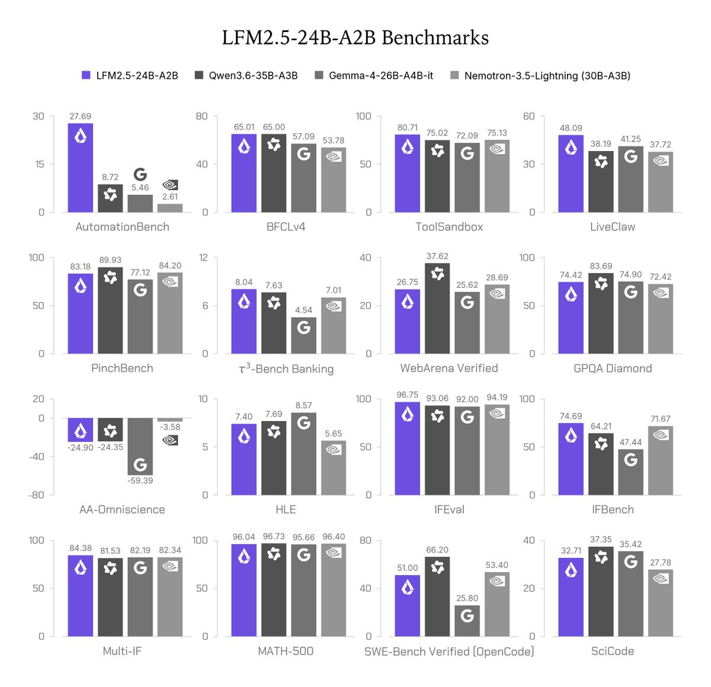
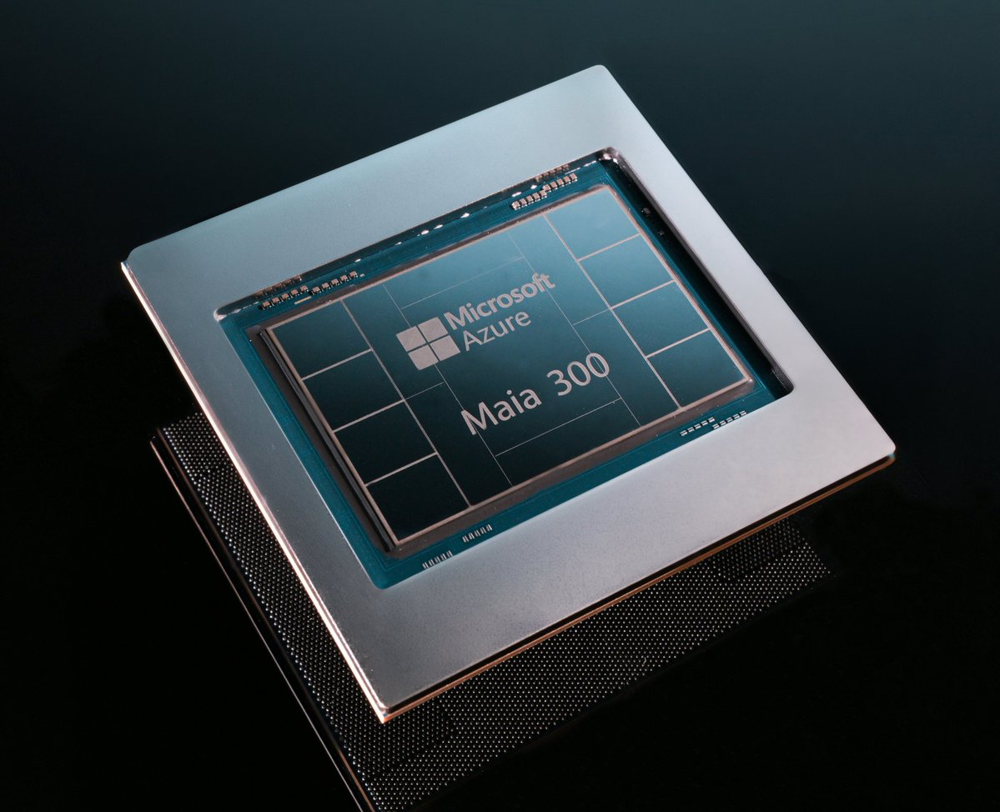
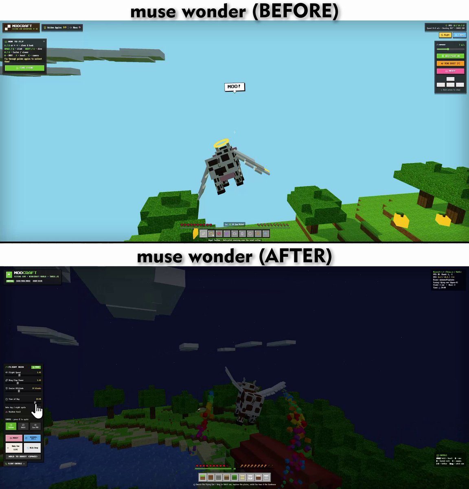
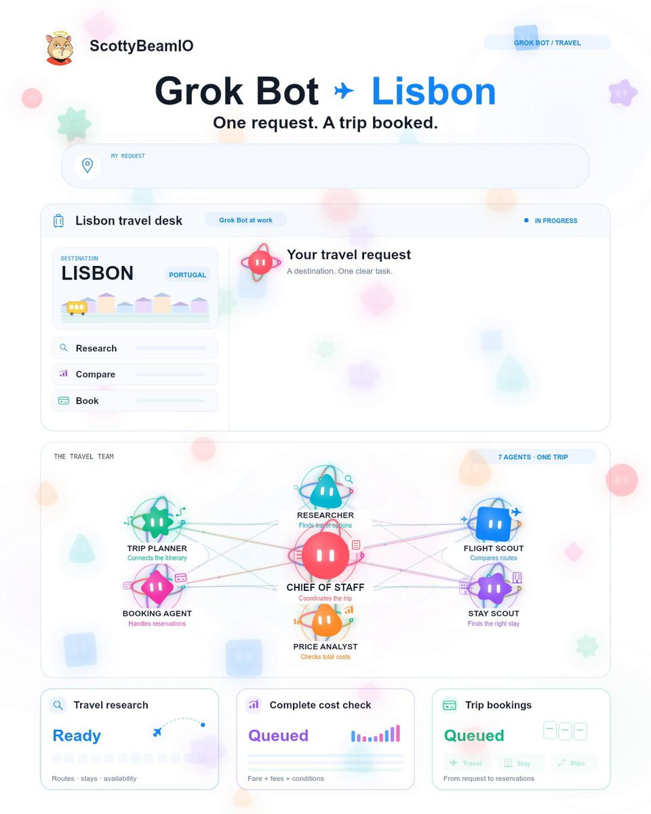
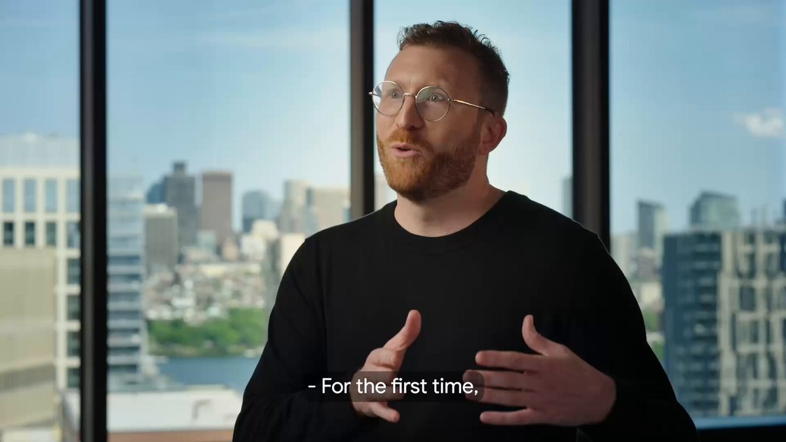

Top stories · 2026-10-14

Tech & AICursor adds Argon, ~3.2K likes. Available in Cursor at 52.8% on CursorBench (default effor
Tech & AIPhysical Intelligence Pi API beta, ~1.3K likes / 171K views. Teams can upload robot data,
Tech & AILiquid AI LFM2.5-24B-A2B, ~2.5K likes / 201K views. Open-weight MoE (~24B total, ~2B activX Tech & AI digest
**Biggest story:** Google shipped [Gemini 4 Argon](https://x.com/sundarpichai/status/2110038898009407584) globally — Sundar’s post hit ~22.5K likes and ~3.8M views.
Launches
Gemini 4 Argon, ~22.5K likes / 3.8M views. Google’s new frontier model is live for API, Antigravity (Ultra), and Gemini app/Search (Pro + Ultra), with intro pricing at $2/$10 per million tokens.
Cursor adds Argon, ~3.2K likes. Available in Cursor at 52.8% on CursorBench (default effort), on par with Opus 5.5.
Physical Intelligence Pi API beta, ~1.3K likes / 171K views. Teams can upload robot data, fine-tune π models on managed compute, and run hosted inference (strawberry picking to server assembly already in the wild).
Liquid AI LFM2.5-24B-A2B, ~2.5K likes / 201K views. Open-weight MoE (~24B total, ~2B active) with 131K context for local agent work on laptops and PCs.
Top threads
Ethan Mollick on Gemini 4’s “feel”, ~5.9K likes. Argon feels unlike the Claude/GPT distillation pack — and he says it’s the first non-OpenAI/Anthropic model to clear the Fable/Mythos/Astra bar.
Demis Hassabis wizard chess demo, ~4.2K likes. DeepMind’s boss shows Argon building a physics-aware 3D chess game.
Theo’s early Argon take, ~2.7K likes. Huge jump and strong value, first perfect score on his private Skatebench — still “weird Gemini shit” sometimes.
DeepMind cornhole robot, ~2.1K likes. Argon watched a video, wrote a sim, and taught Apptronik’s Apollo seven throws in a row.
Google DeepMind𝕏
@GoogleDeepMindGemini 4 Argon taught a robot to play cornhole just by watching a video. It mapped the physics, coded its own simulation, and taught @Apptronik's Apollo humanoid to sink 7 throws in a row.
♥ 2,105 · 💬 178 · 2026-10-13 · View on X

Chrome crash class fixed with Argon, ~2.1K likes. Engineers used it to peel webpage handling out of a 6M-line Chromium legacy folder in weeks instead of months.
Mollick on agent DDoS of customer service, ~629 likes. Personal agents making unlimited refund/deal requests will hit companies like a legal distributed attack.
Must-reads
Anthropic’s in-house source control, ~18.7K likes / 4.3M views. Merges jumped from ~2,500/day in May to 30,000+/day in September — human-scale git broke, so they rebuilt for agents.
Bain’s $6T AI revenue gap, ~5.1K likes. Industry needs ~$6T/year by 2031 to justify the buildout; existing products may only cover ~$1.8T.
Modal RL on mixed GPUs, ~1.0K likes. Async RL across six accelerator types and three precisions stayed stable with off-policy correction (~15% cheaper sampler cost).
Artificial Analysis on Argon, ~2.3K likes. Ties GPT-6 Astra on their Intelligence Index at ~60% of the cost per task at intro prices. Quiet overnight: OpenAI, Karpathy, Sam Altman, and xAI didn’t post anything notable in this window.
Tech & AI news digest (web + Hacker News)
Covers roughly Oct 11–13, 2026 (Beirut time). The first four stories were verified through article searches; the HN items come only from the Hacker News front page, so they cite the front page.
AI
Meta launches Muse Wonder and Muse Wonder Full: frontier-class models for agents, memory, coding and computer use. Muse Wonder costs $4/$20 per million input/output tokens via the Meta Model API and Muse Code; Full is only on Muse Code subscriptions. Oct 12.
Character.AI files for Chapter 11 bankruptcy: court-supervised sale after years of lawsuits; Disney is lead bidder at $20M for a non-exclusive IP license, and the platform shuts down if no buyer keeps it running. Filed Oct 12.

Google DeepMind's AlphaProof Nexus solves open math problems: reportedly 9 open Erdős problems and 44 OEIS conjectures, Lean-verified, published in Science. Oct 12. Secondary source only; confirm against DeepMind or Science.
UC San Diego trains a 7B agent with "theory of mind": NeurIPS 2026 paper (arXiv:2610.12453); ~11.5% relative gains on Sotopia, +26.7 points on BigToM. Oct 12.
HN: GLM-Legal (z.ai): legal-domain model, 608 points, 336 comments. https://news.ycombinator.com/
HN: "AI models can provably hide arbitrary capabilities": arXiv paper, 237 points. Also: the math behind OpenAI's faster Fourier transform claim (argmin.net) and "AI is a tool and using it well takes skill" (474 points). https://news.ycombinator.com/
Broader tech
Cyberattack heats supermarket fridges across Europe: hackers forced Danfoss controllers into nonstop defrost at ~50°C in hundreds of stores, mainly in France, spoiling food and causing fires; Paris prosecutor investigating. Oct 12–13.
HN: Intel D270 GPU AI accelerator: up to 480 GB LPDDR5X, 263 points. https://news.ycombinator.com/
HN: 11-year-old soundness bugs in Rust's borrow checker: #1 on HN, 248 points. https://news.ycombinator.com/
HN: Mozilla introduces Firefox Enterprise; AWS Lambda Web Functions. https://news.ycombinator.com/
X discussions (low engagement, none viral)
Muse Wonder security audit cost $7.50, "virtually no different" from other frontier models: https://x.com/adamisnotroman/status/2109992831498453096
Muse Wonder uses ~10% fewer tokens than Muse Spark 1.3 but costs 2.8x more per task: https://x.com/Jinnanog5/status/2109992679954379246
GPT-6 Astra vs Muse Wonder head-to-head: https://x.com/Munix777/status/2109953816712093923
Launch-day 3D demos aren't real evals: https://x.com/jeff_br/status/2109992922087403628
X deep dive — Tech & AI
High-signal X posts from Oct 11–13, 2026 (Beirut time). Engagement as of ~4 PM Oct 13.
Launches
The X Subscription (@SpaceXSI): one plan for X Premium, Grok, Grok Bot and Cursor. 14.0K likes, 1.6K reposts, 3.7M views. https://x.com/SpaceXSI/status/2109783335296008414 - @X: switch "for the same price or less" (3.7K likes): https://x.com/X/status/2109787535509799385
SpaceX Super Intelligence𝕏
@SpaceXSIWe've unified plans across Grok, Cursor, and X Premium. Introducing The X Subscription.
♥ 14,275 · 💬 1,210 · 2026-10-12 · View on X

X𝕏
@Xlet me upgrade you switch your X Premium plan to The X Subscription and get Grok and Cursor benefits included for the same price or less
♥ 3,744 · 💬 520 · 2026-10-12 · View on X

Cursor joins the X Subscription (@cursor_ai): shared usage pool, twice the coding usage on Grok models. 5.4K likes, 443K views. https://x.com/cursor_ai/status/2109783879490191502
Cursor𝕏
@cursor_aiCursor is now part of The X Subscription. Current Cursor subscribers can keep their plan or switch to The X Subscription. Paid plans share one usage pool across Cursor, Grok Build, and other Grok products, with twice the coding usage on Grok models as the equivalent Cursor
♥ 5,510 · 💬 490 · 2026-10-12 · View on X

Microsoft Maia 300 (@satyanadella): Maia chips scaling to multi-gigawatt deployments; 40% more tokens per watt. 14.7K likes, 1.9M views. https://x.com/satyanadella/status/2109631106404487523 - Mustafa Suleyman (824 likes): https://x.com/mustafasuleyman/status/2109655335250366752
Satya Nadella𝕏
@satyanadellaToday we are announcing our biggest bet yet on our own silicon. Starting next calendar year, we will scale our Maia family to multi-gigawatt deployments, making it the primary inference system for our own product and services. And we’re introducing Maia 300, which delivers 40%

♥ 14,797 · 💬 732 · 2026-10-12 · View on X
Mustafa Suleyman𝕏
@mustafasuleymanOur new silicon is 🔥 40% more tokens per watt!
♥ 835 · 💬 54 · 2026-10-12 · View on X

Muse Wonder and Muse Wonder Full (@AIatMeta): Meta's "most capable models yet". 2.0K likes, 202K views. https://x.com/AIatMeta/status/2109691148943999167 - "Pushing the frontier in 14 months" (1.9K likes): https://x.com/AIatMeta/status/2109698705490149596
Mistral "Le Chonk" (@MistralAI): 42% on Dense 200 visual grounding. 3.0K likes, 115K views. https://x.com/MistralAI/status/2109687906751086628
Google Fitbit Edge (@Google): new fitness tracker. 1.9K likes, 859K views. https://x.com/Google/status/2109734787397325099
Nvidia RTX Spark laptops (@nvidia): launch events. 3.5K likes, 259K views. https://x.com/nvidia/status/2109709587150471195
Tesla Robotaxi update (@robotaxi): 6am–11pm hours, shorter waits, Grok Bot in Cybercab. 7.3K likes, 1.5M views. https://x.com/robotaxi/status/2109742678435119540 - Elon Musk quote (10.8K likes): https://x.com/elonmusk/status/2109803903256502307
Robotaxi𝕏
@robotaxiRobotaxi service updates from the last few weeks: – Operating hours are now 6am-11pm – Reduced wait times thanks to increased supply & orchestration algorithms – Trunk now opens automatically at end of ride if utilized – Grok @bot now available in Cybercab
♥ 7,421 · 💬 240 · 2026-10-12 · View on X

Top threads and tweets
@karpathy: the gap in understanding AI capability is widening into a "sharp funnel". 41.7K likes, 29K bookmarks, 5.9M views. https://x.com/karpathy/status/2109361546505966046
@emollick: 19 smartphone-capable models now beat GPT-4. 1.5K likes. https://x.com/emollick/status/2109851162518425779 - AI agent debugging a Substack issue on its own: https://x.com/emollick/status/2109789058587377683
@alexandr_wang: fixing Muse Wonder issues fast. 710 likes. https://x.com/alexandr_wang/status/2109790832174018620 - Before/after by @TimJayas: https://x.com/TimJayas/status/2109782293317611650 - Pure-code video recreation demo: https://x.com/alexandr_wang/status/2109904717027627374
Alexandr Wang𝕏
@alexandr_wangwe are fixing issues as fast as we can see them! there's definitely still issues we're trying to iron out, but thank you to everyone for giving us a bit of time to work through all the kinks 🫶

♥ 729 · 💬 50 · 2026-10-12 · View on X
Tim Jayas𝕏
@TimJayasmuse-wonder just got better (before/after) after @alexandr_wang acknowledged there were bunch of bugs, there's been a noticeable improvement with muse-wonder both outputs are from the same prompt, one taken directly after the model launch and the one after the fix
♥ 137 · 💬 17 · 2026-10-12 · View on X

Alexandr Wang𝕏
@alexandr_wangart cannot be created or destroyed, only remixed (pure code recreation of *the video* using muse wonder)
♥ 297 · 💬 79 · 2026-10-13 · View on X
@fchollet: agriculture as open-source self-replicating nanotech. 2.2K likes. https://x.com/fchollet/status/2109802734899880280
Elon Musk promoting Grok Bot (3–6K likes each): - Memory transfer: https://x.com/elonmusk/status/2109867516646637579 - Lisbon trip-booking demo: https://x.com/elonmusk/status/2109811974804852962 - @emigal daily-driver review: https://x.com/emigal/status/2109672788264910948
Elon Musk𝕏
@elonmuskGive Grok @Bot your hardest tasks

♥ 4,710 · 💬 774 · 2026-10-13 · View on X
Emi Gal𝕏
@emigalI've been using Grok @Bot as my daily driver for a few weeks now and: - it has replaced 100% of my search-like queries on chatgpt / claude - it has replaced 100% of my Hermes usage & automations - it now runs 100% of my Cursor cloud agents, reviews PRs, merges for me It also
♥ 742 · 💬 90 · 2026-10-12 · View on X
Pushback on the X Subscription: - Shared weekly limit warning: https://x.com/CreeCoder/status/2109987693681656211 - Claude/GPT in Cursor billed at API price: https://x.com/duggalgg/status/2109988523034263577
Articles and papers
Anthropic on distillation attacks (@AnthropicAI). 4.7K likes, 1.35M views. https://x.com/AnthropicAI/status/2109795898909950247
Google AMIE study in The Lancet (@sundarpichai). 1.9K likes. https://x.com/sundarpichai/status/2108329198955958339 - Demis Hassabis: https://x.com/demishassabis/status/2109813775377563908
Sundar Pichai𝕏
@sundarpichaiToday @TheLancet published our AMIE study with @BIDMC_Medicine, the first prospective study of patient-facing conversational diagnostics in a real clinic. AMIE is a research system people can chat with before doctors appointments. Testing AMIE outside the lab with real urgent

♥ 1,932 · 💬 259 · 2026-10-08 · View on X
Demis Hassabis𝕏
@demishassabisAmazing to see research move from the lab to real-world clinical utility - congrats to the team on this milestone & @TheLancet paper!
♥ 1,199 · 💬 81 · 2026-10-13 · View on X

Perplexity Projects as a Git forge for agents (@perplexity_ai). 356 likes. https://x.com/perplexity_ai/status/2109706972723609733
Simon Willison's Python 3.15 notes (@simonw). 417 likes. https://x.com/simonw/status/2109711203077619768 - BudgetPix paper (@_akhaliq): https://x.com/_akhaliq/status/2109711696944300535
X deep dive — Startups & Launches
Startup, funding, launch and M&A posts on X, Oct 11–13, 2026 (Beirut time).
New startups and funding
micro1 passes $1B annual run rate (@aliansarinik), profitable. 1.1K likes, 594K views. https://x.com/aliansarinik/status/2109680885650055250 - @cory (233 likes): https://x.com/cory/status/2109764900583039309
Catalyst — $30M seed, AI trading agents; led by Sequoia with Jump Trading, Peak XV, Coinbase Ventures. https://x.com/pivotintelHQ/status/2109985001525887068
Harbor AI — $10M seed, AI risk software for banks/insurers; Base10, Abstract VC, 8VC. https://x.com/jbahrdestefano/status/2109990462236807392
Clueso — $10M Series A, agent-made training videos; led by Dharana Capital. https://x.com/SovGlobalMag/status/2109990816999411967
Lightsprint — $6.1M seed, plain English to pull requests; 645 Ventures, January Capital, Rebel Fund, Kaz Nejatian. https://x.com/dealroomnews/status/2109995227666674091
Giraffe Bio — $6.4M seed, copper extraction biotech. https://x.com/TechCrunch/status/2109988296675713428
Mesa School — ₹110 crore Series A, backed by Elevation Capital. https://x.com/ElevCap/status/2109885939497767214
NuSynth Technologies — ₹36.5 crore seed, Avaana Capital and Shastra VC. https://x.com/indstartupnews/status/2109988815679176883
VCs supplying compute (The Information): a16z expanding compute, General Catalyst building a data center. https://x.com/theinformation/status/2109747642691465572
Product launches
SubQ Snap (@alex_whedon): long-context decision model, 384K tokens. 2.8K likes, 4.3M views. https://x.com/alex_whedon/status/2109676361371824229
Apple Home Collection: new smart-home accessories (reposts of Apple newsroom headline). https://x.com/mnishi41/status/2109992785168548332
American Express agent-purchase framework (@TechCrunch). https://x.com/TechCrunch/status/2109993325285552565
TRM Labs Ardence: AI investigation platform. https://x.com/trmlabs/status/2109992625436611024
Smaller launches: Elgato Wave Go https://x.com/elgato/status/2109992750309597295; Selfdrive https://x.com/SuperAppIOS/status/2109992557338034657
Acquisitions and other moves
Bumble to be acquired by Ithaca Holdings at $6.05/share cash (~$1.3B per posts). https://x.com/AskEdgar_App/status/2109991663611392467
Proscia to be acquired by Agilent. https://x.com/Proscia/status/2109990655602667921
Other: Workday acquisition (terms undisclosed) https://x.com/CHItrader/status/2109989993112387691; Character.AI asset sale to Disney https://x.com/TechCrunch/status/2109984775251333215; Sora licensing talks https://x.com/theinformation/status/2109766227266543889
Founder/VC discussion: @garrytan on profitability as an "annual Series A" (2.1K likes) https://x.com/garrytan/status/2109748677464277437; @rajivayyangar on "Buoyancy" (1.3K likes) https://x.com/rajivayyangar/status/2109727405652717967